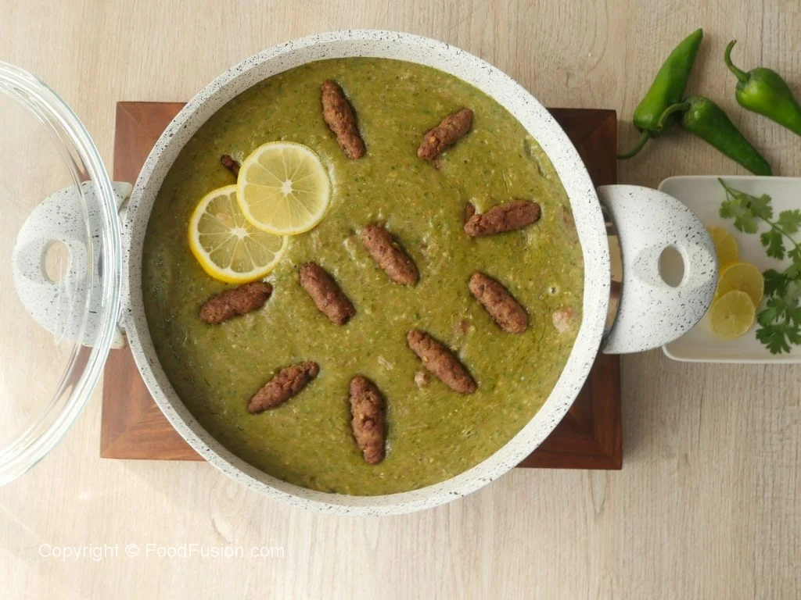

Lahori Hareesa

Hello to all the foodies around the country, and welcome to Aizah's Kitchen, which is proud to bring the delectable Lahori Hareesa recipe to you! The Hareesa recipe is often called the sister of the daleem (Haleem) recipe for the reason that the two recipes look much identical/ although there is a great deal of difference between the two when as far as cooking method is concerned. This bulky and loaded Pakistani recipe is a beloved dish of denizens of Lahore and there are numerous eateries in the city alone that serve it at a sizzling hot temperature. There are countless traditional cooking recipes on the set of choices at the largest online food network of Pakistan: Aizah's Kitchen is one of the most honorable mentions include the enjoyable chicken Nihari recipe, the soft and steamy Kashmiri pulao recipe, the flavorsome Sindhi biryani recipe, the healthy and hearty chicken chapli kabab recipe, the tasty Lahori Murgh Chanay recipe, the spicy kabab masala recipe, the royal chicken Nawabi handi recipe, the appetizing achar gosht recipe, the aromatic Punjabi Yakhni pulao recipe, the soft and creamy palak paneer recipe and at last but not the least, the chicken Shami kabab recipe. The Hareesa recipe originally goes by the name of “Harees” which is a derivation from the Arabic verb, literally translating to the process of squashing or mashing. Having its origin from the Saudi Arabian desert, the recipe is based the principles of Arabian cuisine and consist of coarsely ground wheat which is left to cook overnight and then simmered in water together with meat and butter. Sometimes, tail fat from a sheep is also used in the cooking process. If you want to learn the art of preparing the delectable Lahori Hareesa recipe
Ingredients
- Beef boneless cubes ½ kg
- Zeera (Cumin seeds) roasted & crushed ½ tbs
- Namak (Salt) 1 & ½ tsp or to taste
- Kali mirch (Black pepper) crushed 1 tsp
- Adrak lehsan paste (Ginger garlic paste) 2 tbs
- Hari mirch (Green chili) paste 2 & ½ tbs
- Pani (Water) 1 litre or as required
- Hari moong daal (Split green lentil) ½ Cup (soaked overnight)
- Gandum (Wheat) 1 Cup (soaked overnight)
- Chawal (Rice) ½ Cup (soaked overnight)
- Pani (Water) 2 & ½ litres or as required
Kabab Ingredients
- Beef qeema (Beef mince) ½ kg
- Hari mirch (Green chili) paste 3 tbs
- Adrak lehsan paste (Ginger garlic paste) 2 tbs
- Namak (Salt) 1 tsp or to taste
- Baisan (Gram flour) 4-5 tbs
- Cooking oil for frying
- Namak (Salt) 1 tsp or to taste
- Pani (Water) 2 Cups or as required
Tadka Ingredients
- Palak (Spinach) blanched 1 bunch
- Hari mirch (Green chilies) 7-8
- Desi ghee ¾ Cup
PROCEDURE
- In pressure cooker,add beef boneless cubes,cumin seeds,salt,black pepper crushed,ginger garlic paste, green chili paste,water,mix well and bring it to boil.
- Cover and cook on medium low flame until meat is tender (approx. 40-45 minutes) then mash well,take out in a bowl & set aside.
- Cover and cook on medium flame until tender (approx. 1 hour).
Kabab Procedure
- In bowl,add beef mince,green chili paste,ginger garlic paste,salt and mix well.
- Add gram flour and mix until well combined.
- Grease hands with oil,take a mixture and make small kababs of equal sizes (makes 40-45).
- In frying pan,heat cooking oil and fry kababs until golden brown & set aside for later use.
- Turn off the flame and blend the mixture with the help of the blender until required consistency.
- Turn on the flame,add cooked meat and mix well.
- Add salt and mix well.
- Add water and mix well.
- Now add prepared kababs and give it a good mix.
Tadka Procedure
- In blender,add spinach,green chilies,blend well & set aside.
- In frying pan,add desi ghee and let it melt.
- Add blended green paste and fry for 4-5 minutes.
- Now pour tadka on hareesa mixture,mix & serve!